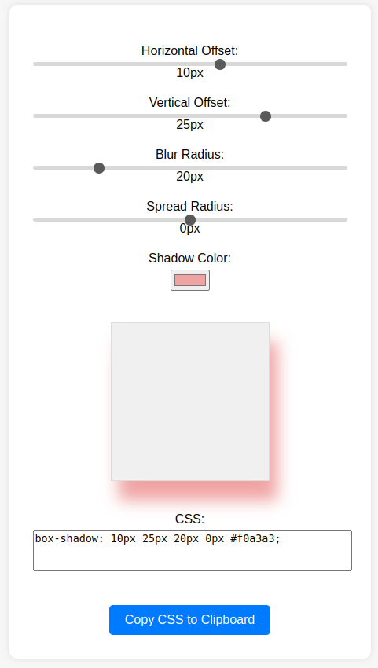

I've been really enjoying following Simon Willison's blog posts recently. Simon shows other programmers the way LLMs will be used for code assistance in the future, and posts full interactions with LLMs to build small tools or parts of larger applications.
A recent post caught my attention; here Simon got an LLM (Claude 3.5 Sonnet in this case) to build a complete tool that lets one configure/tweak box shadow settings and copy the resulting CSS code for use in a real application. One thing that seemed interesting is that the LLM in this case used some heavyweight dependencies (React + JSX) to implement this; Almost 3 MiB of dependency for something that clearly needs only a few dozen lines of HTML + JS to implement; yikes.
So I've decided to try my own experiment and get an LLM to do this without any dependencies. It turned out to be very easy, because the LLM I used (in this case ChatGPT 4o, but it could really have been any of the top-tier LLMs, I think) opted for the no-dependency approach from the start. I was preparing to ask it to adjust the code to remove dependencies, but this turned out to be unnecessary.
The resulting tool is very similar to Simon's in functionality; it's deployed at https://eliben.org/box-shadow-tool/; here's a screenshot:
Here are my prompts:
CSS for a slight box shadow, build me a tool that helps me twiddle settings and preview them and copy and paste out the CSS
ChatGPT produced a working tool but it didn't really look good on the page.
Yes, make the tool itself look a bit better with some CSS so it's all centered on the screen and there's enough space for the preview box
It still wasn't quite what I wanted.
the container has to be wider so all the text and sliders fix nicely, and there's still not enough space for the shadows of the preview box to show without overlapping with other elements
Now it was looking better; I wanted a button to copy-paste, like in Simon's demo:
this looks better; now add a nice-looking button at the bottom that copies the resulting css code to the clipboard
The code ChatGPT produced for the clipboard copy operation was flagged by vscode as deprecated, so I asked:
it seems like "document.execCommand('copy')" is deprecated; is there a more accepted way to do this?
The final version can be seen in the online demo (view-source). The complete ChatGPT transcript is available here.
Insights
Overall, this was a positive experience. While a tool like this is very simple to implement manually, doing it with an LLM was even quicker. The results are still not perfect in terms of alignment and space, but they're good enough. At this point one would probably just take over and do the final tweaks manually.
I was pleasantly surprised by how stable the LLM managed to keep its output throughout the interaction; it only modified the parts I asked it to, and the rest of the code remained identical. Stability has been an issue with LLMs (particularly for images), and I'm happy to see it holds well for code (there could be some special tuning or prompt engineering for ChatGPT to make this work well).